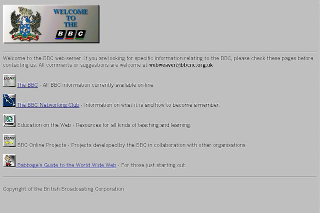

Adoption of Linked Open Data
at the BBC
@moustaki – Yves Raimond, Programmes & On Demand (/programmes)
@olivierthereaux – Olivier Thereaux, R&D Prototyping
“Inform, Educate and Entertain”
Wealth of content and knowledge
Radio since 1922
TV since 1930
On the Web since 1994

… and some journalism too

Bespoke Web Sites
1000 to 1500 programmes a day

Bespoke: Cost/Benefit?
/programmes
- Automated programme support
- Aggregating internal metadata about our programmes
- Web identifier for each BBC programme - multiple representations
/programmes - what for?
- Persistence
- "Linkability"
- Discoverability
The BBC is the authority for data about our programmes
What about the rest? (music, nature, etc.?)
Web as a Content Management System
Don't reinvent, link!
Build upon Open Data Repositories
Aggregate and Contribute
Add value
- Publish
- Expose
- Build great experience
“Our website is the API”
Build the ecosystem
- "Design for your least-able user"
- Data boosts SEO
- Outsourcing innovation
Open Innovation
- New UX ideas
- New idea of data sources to integrate
- New prototypes and products pushing traffic towards us
Build the ecosystem
Inside and Out
- “BBC large enough to operate as an ecosystem”
Loosely coupled development
- Music consumes from Programmes
- Programmes consumes from Music
- Nature consumes from Programmes
Linked Data principles
- Use URIs as names for things
- … HTTP URIs so people can look up those names
- Behind URIs: provide useful information, using standards
- Include links to other URIs, so that they can discover more things
The age of pointing-at-things
Dynamic Semantic Publishing
Link (more, better)
Technology choices are not (culturally) neutral
Thank You